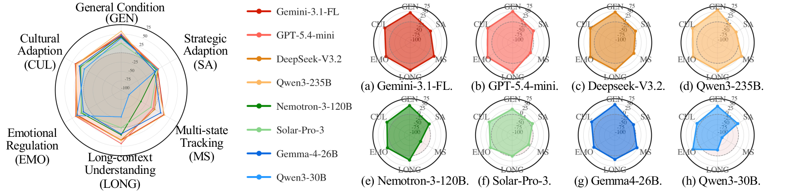
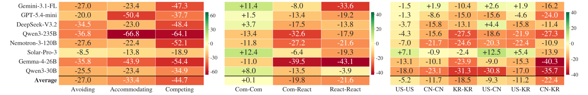
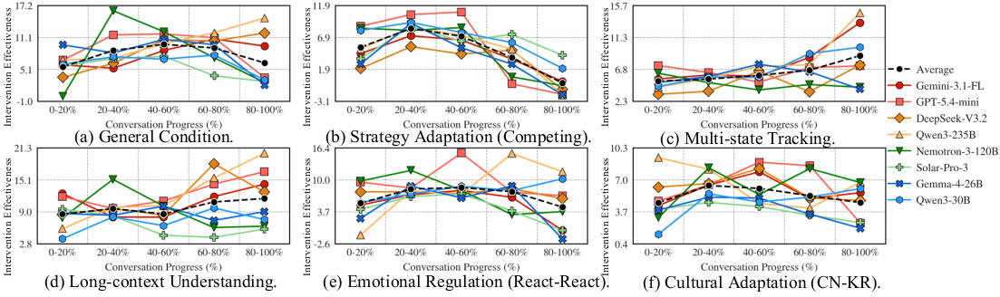

Overview.SoCRATES is a benchmark for evaluating LLMs as proactive mediators of social conflict, where mediation unfolds as a real-time trajectory shaped by disputants' shifting emotions, intentions, and context. An agentic pipeline grounds every scenario in a real public dispute across eight conflict domains, five socio-cognitive axes probe how mediators adapt to strategic posture, party composition, history length, emotional reactivity, and cultural identity, and a topic-localized evaluator scores each topic only on the turns that advance it. Benchmarking eight frontier LLMs, even the strongest mediator closes only about a third of the unmediated consensus gap, with performance varying sharply by socio-cognitive axis.
Figure 1. Overview of SoCRATES. Agentic scenario curation grounds every scenario in a real-world conflict; socio-cognitive probing expands each scenario along five axes to expose where each mediator fails; and topic-localized evaluation scores each trajectory with three metrics to quantify the mediator's contribution.
Abstract
Evaluating LLM mediators remains challenging, as mediation unfolds as a real-time trajectory shaped by disputants' shifting emotions, intentions, and context. Existing testbeds rely on a few expert-authored domains, vary mainly strategic posture, and score every turn against every topic, introducing off-topic noise. We introduce SoCRATES, a benchmark for evaluating proactive LLM mediators in realistic, multi-domain testbeds. It constructs scenarios from real conflicts through an agentic pipeline across eight domains, probes five socio-cognitive adaptation axes (strategic posture, party composition, history length, emotional reactivity, and cultural identity), and scores each topic only on the turns that advance it via a topic-localized evaluator. The evaluator reaches 0.82 alignment with human experts, more than doubling a per-turn baseline. Benchmarking eight frontier LLMs, we find that even the strongest mediator closes only about a third of the unmediated consensus gap under diverse and realistic testbeds, with performance varying sharply by socio-cognitive axis, highlighting that progress lies in social adaptation to diverse conditions.
Key Contributions
A unified, automated framework for evaluating proactive LLM mediation that integrates agentic scenario curation, socio-cognitive probing, and topic-localized evaluation in a single pipeline.
A topic-localized evaluator that scores mediator trajectories along three real-time metrics and correlates with expert judgments at Pearson r = 0.82.
A comprehensive benchmark of eight proprietary and open-source LLM mediators across diverse conflict domains and socio-cognitive axes.
We find that the strongest mediator closes only roughly a third of the unmediated consensus gap, and that gains vary sharply by socio-cognitive axis, with strong mediation adapting its intervention strategy to socio-cognitive demands.
The SoCRATES Framework
1
Agentic Scenario Curation
A three-stage pipeline of LLM agents searches the web for real public disputes across eight conflict domains, recasts each case into a structured scenario, and filters via rejection sampling, retaining only hard scenarios that fail to resolve without a mediator.
2
Socio-Cognitive Probing
Each scenario is perturbed independently along five axes — strategic posture, party composition, history length, emotional reactivity, and cultural identity — so any shift in mediator performance is attributable to a single axis, yielding per-axis diagnostics.
3
Topic-Localized Evaluation
For each topic, the evaluator scores agreement only at the turns that actively move it and carries scores forward otherwise, supporting three metrics: consensus gain, intervention timeliness, and intervention effectiveness.
Evaluator Validation
Two expert annotators rate 1,844 snippets from 144 mediator trajectories (inter-annotator agreement α = 0.86). The topic-localized evaluator aligns far better with experts than a per-turn baseline (ProMediate) or a Non-expert rater, at both the trajectory and outcome levels.
Evaluator
Trajectory level (r)
Outcome level (r)
Non-expert
0.331
0.527
ProMediate per-turn
0.372
0.432
SoCRATES ours
0.823
0.801
Leaderboard
Eight LLM mediators benchmarked on SoCRATES, each run on 600 scenario–condition pairs (4,800 runs in total). We report three metrics: Intervention Timeliness (when the mediator acts relative to escalation), Intervention Effectiveness (how much each intervention shifts consensus), and Consensus Gain (overall contribution to closing the unmediated agreement gap). Click a column header to sort.
Core Metrics
Mediator
Timeliness
Effectiveness
Consensus Gain
GPT-5.4-mini Closed
79.9
24.6
34.4
Gemini-3.1-Flash-Lite Closed
80.9
24.6
33.0
DeepSeek-V3.2 Open
75.8
23.1
31.9
Qwen3-235B Open
76.4
24.6
30.7
Gemma-4-26B Open
79.0
18.1
21.0
Nemotron-3-120B Open
72.0
19.2
20.4
Solar-Pro-3 Open
84.6
16.7
19.9
Qwen3-30B Open
84.6
19.7
15.7
All-mediator Average
79.2
21.3
25.9
Consensus Gain by Conflict Domain
Mediator
Trans.
Health
Env.
B2B
Policy
Intl.
Legal
Intra.
Avg.
GPT-5.4-mini Closed
55.6
23.6
35.0
32.0
28.2
30.3
41.2
29.5
34.4
Gemini-3.1-Flash-Lite Closed
52.1
47.7
25.9
34.6
36.0
22.0
26.7
18.8
33.0
DeepSeek-V3.2 Open
53.3
41.2
27.6
26.4
35.4
26.6
27.0
17.8
31.9
Qwen3-235B Open
51.0
29.7
22.8
28.2
32.5
33.8
20.7
26.9
30.7
Gemma-4-26B Open
42.9
22.9
24.6
15.8
7.1
15.9
24.4
14.6
21.0
Nemotron-3-120B Open
41.9
41.1
16.7
14.5
15.8
17.7
7.0
8.3
20.4
Solar-Pro-3 Open
41.8
30.1
24.3
28.3
6.6
13.4
6.0
8.7
19.9
Qwen3-30B Open
-7.9
48.6
26.3
16.0
17.9
18.1
-1.2
8.2
15.7
All-mediator Average
41.3
35.6
25.4
24.5
22.4
22.2
19.0
16.6
25.9
Leaderboard Visualization
Consensus Gain by Mediator
Average consensus gain across the eight conflict domains. Even the strongest mediator closes only about a third of the unmediated agreement gap.
Consensus Gain Heatmap Across Domains
Rows are mediators, columns are the eight conflict domains. Consensus gain swings from Transactional (easy) down to Intra-organizational (hard).
LowerHigher
Key Findings
01
Mediation is hard, and scale alone does not solve it
Average consensus gain caps at 34.4, and no mediator clears half the unmediated gap in any domain. The two proprietary models lead, but within a family scale helps (Qwen3-235B nearly doubles Qwen3-30B) while across families it does not order the field. General capability does not directly translate to mediation.
02
Timeliness without effectiveness
Solar-Pro-3 and Qwen3-30B post the highest intervention timeliness yet rank lowest on consensus gain, intervening too often without affecting the outcome. Effectiveness, in contrast, aligns with consensus gain. A good mediator must intervene at the right moments and with the right content.
03
Domain coverage shapes the verdict
Consensus gain swings from 41.3 on Transactional conflict down to 16.6 on Intra-organizational disputes. The easy end coincides with where prior datasets concentrate. A benchmark restricted to transactional conflict overstates mediation ability.
04
Mediators have uneven socio-cognitive profiles
Across the five socio-cognitive axes, every mediator contracts on at least one, and strong mediators differ in where they fail. Strategy is the sharpest stress test (Competing and Accommodating postures cause the largest drops); emotional reactivity degrades every mediator when both parties are reactive; and cultural identity produces small but systematic declines as cultural distance from U.S. norms grows. Mediation competence comprises distinct abilities that current LLMs acquire unevenly.

Figure 2. Mediator adaptation across the general condition and five socio-cognitive axes, measured by consensus gain.

Figure 3. Consensus gain shift from the general condition along three axes: (a) strategic posture, (b) emotional reactivity, and (c) cultural identity. Negative values indicate degradation.

Figure 4. Intervention effectiveness over normalized conversation progress. The best intervention window moves with the condition, and stronger mediators peak near each condition's window.
Conclusion
We present SoCRATES, a benchmark for evaluating proactive LLM mediators in realistic, multi-domain testbeds. By grounding scenarios in real public disputes, probing five socio-cognitive axes independently, and scoring each topic only on the turns that advance it, SoCRATES reveals that even the strongest mediator closes only about a third of the unmediated consensus gap, with performance varying sharply by conflict domain and socio-cognitive axis. These results show that progress in LLM mediation lies not in raw capability but in social adaptation to diverse conditions.
BibTeX
@article{yun2026socrates,
title={SoCRATES: Towards Reliable Automated Evaluation of Proactive LLM Mediation across Domains and Socio-cognitive Variations},
author={Yun, Taewon and Park, Hyeonseong and Choi, Jeonghwan and Park, Hayoon and Choi, Yeeun and Song, Hwanjun},
journal={arXiv preprint},
year={2026}
}